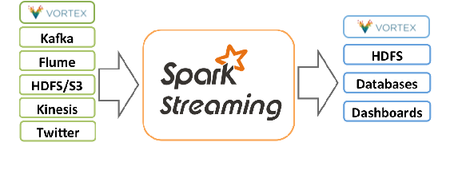

vortex-spark
Building for Vortex Cafe
mvn install -P cafe-buildBuilding for Vortex OpenSplice
In order to build for Vortex OpenSplice the OSPL_HOME environment variable must be defined.
mvn install -P ospl-buildVortex Overview
PrismTech’s Vortex Intelligent Data Sharing Platform provides the leading implementations of the Object Management Group’s Data Distribution Service (DDS) for Real-time Systems standard. DDS is a middleware protocol and API standard for data-centric connectivity and is the only standard able to meet the advanced requirements of the Internet of Things (IoT). DDS provides the low-latency data connectivity, extreme reliability and scalability that business and mission-critical IoT applications need. For more information visit www.prismtech.com/vortex .
Support
This is a proof of concept/prototype/alpha and is therefore provided as is with no formal support. If you experience an issue or have a question we'll do our best to answer it. In order to help us improve our innovations we would like your feedback and suggestions. Please submit an issue and/or provide suggestions via the GitHub issue tracker or by emailing innovation@prismtech.com.
License
All use of this source code is subject to the Apache License, Version 2.0. http://www.apache.org/licenses/LICENSE-2.0
“This software is provided as is and for use with PrismTech products only.
DUE TO THE LIMITED NATURE OF THE LICENSE GRANTED, WHICH IS FOR THE LICENSEE’S USE OF THE SOFTWARE ONLY, THE LICENSOR DOES NOT WARRANT TO THE LICENSEE THAT THE SOFTWARE IS FREE FROM FAULTS OR DEFECTS OR THAT THE SOFTWARE WILL MEET LICENSEE’S REQUIREMENTS. THE LICENSOR SHALL HAVE NO LIABILITY WHATSOEVER FOR ANY ERRORS OR DEFECTS THEREIN. ACCORDINGLY, THE LICENSEE SHALL USE THE SOFTWARE AT ITS OWN RISK AND IN NO EVENT SHALL THE LICENSOR BE LIABLE TO THE LICENSEE FOR ANY LOSS OR DAMAGE OF ANY KIND (EXCEPT PERSONAL INJURY) OR INABILITY TO USE THE SOFTWARE OR FROM FAULTS OR DEFECTS IN THE SOFTWARE WHETHER CAUSED BY NEGLIGENCE OR OTHERWISE.
IN NO EVENT WHATSOEVER WILL LICENSOR BE LIABLE FOR ANY INDIRECT OR CONSEQUENTIAL LOSS (INCLUDING WITHOUT LIMITATION, LOSS OF USE; DATA; INFORMATION; BUSINESS; PRODUCTION OR GOODWILL), EXEMPLARY OR INCIDENTAL DAMAGES, LOST PROFITS OR OTHER SPECIAL OR PUNITIVE DAMAGES WHATSOEVER, WHETHER IN CONTRACT, TORT, (INCLUDING NEGLIGENCE, STRICT LIABILITY AND ALL OTHERS), WARRANTY, INDEMNITY OR UNDER STATUTE, EVEN IF LICENSOR HAS BEEN ADVISED OF THE LIKLIHOOD OF SAME.
ANY CONDITION, REPRESENTATION OR WARRANTY WHICH MIGHT OTHERWISE BE IMPLIED OR INCORPORATED WITHIN THIS LICENSE BY REASON OF STATUTE OR COMMON LAW OR OTHERWISE, INCLUDING WITHOUT LIMITATION THE IMPLIED WARRANTIES OF MERCHANTABLE OR SATISFACTORY QUALITY AND FITNESS FOR A PARTICULAR PURPOSE, TITLE AND NON INFRINGEMENT ARE HEREBY EXPRESSLY EXCLUDED TO THE FULLEST EXTENT PERMITTED BY LAW. “